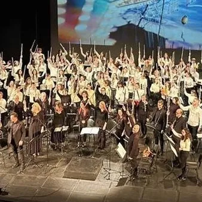

da ven 4 dic a lun 7 dic
Trieste Flute Festival 2026
ll Trieste Flute Festival raggiungerà tuttavia il suo apice nelle prossime giornate, quando Trieste ospiterà quattro giornate dedicate al flauto, alla formazione musicale e all’incontro tra artisti, studenti e appassionati, dal 4 al 7 dicembre, presso la Casa della Musica di via…
 Indicazioni
Indicazioni
- Costi e prenotazioni
- Costo non indicato · Prenotazione non indicata
- Programma
- Programma da verificare. Apri la fonte ufficiale per orari e possibili aggiornamenti.
- In caso di maltempo
- Nessuna indicazione specifica pubblicata.
- Note
- Acquisito automaticamente dalla fonte.
L’EVENTO
Descrizione completa
ll Trieste Flute Festival raggiungerà tuttavia il suo apice nelle prossime giornate, quando Trieste ospiterà quattro giornate dedicate al flauto, alla formazione musicale e all’incontro tra artisti, studenti e appassionati, dal 4 al 7 dicembre, presso la Casa della Musica di via dei Capitelli. Un programma ricco di appuntamenti con Masterclass, workshop, concerti e performance, con momenti di incontro e condivisione musicale con gli artisti ospiti.
Per iscrizioni e per il programma completo visitare il sito triesteflute.it
PROGRAMMA: Venerdì 4 dicembre 2026 dalle 16:00 alle 19:00 presso Ars Nova Masterclass di Walter Auer Sabato 5 dicembre 2026 dalle 14:30 alle 16:00 presso Casa della Musica
Prove della Young Orchestra
dalle 16:00 alle 17:00 presso Casa della Musica con Antonella Benatti
Workshop Alexander Technique dalle 17:00 alle 18:00 presso Casa della Musica con Silvia Careddu
Masterclass alle 20:00 presso Ridotto del Teatro Verdi
Concerto di Walter Auer, Matej Zupan, Amedeo Salvato Domenica 6 dicembre 2026 dalle 09:00 alle 10:00 presso Casa della Musica con Antonella Benatti
Workshop Alexander Technique dalle 10:00 alle 13:00 presso Casa della Musica con Matej Zupan
Masterclass dalle 14:30 alle 16:00 presso Casa della Musica Young Orchestra
Prove dalle 16:00 alle 17:00 presso Casa della Musica Australian Flute Ensemble
Workshop dalle 17:00 alle 18:30 presso Casa della Musica Oscar De Manuel
Workshop Flute Flamenco e breve concerto alle ore 20:00 presso Ridotto del Teatro Verdi
Concerto di Australian Flute Ensemble, Silvia Careddu e Amedeo Salvato Lunedì 7 dicembre 2026 dalle 09:00 alle 10:00 presso Casa della Musica
con Antonella Benatti
Workshop Alexander Technique dalle 10:00 alle 16:00 presso Casa della Musica
con Daminelli
Esposizione e riparazione veloce flauti dalle 10:30 alle 12:30 presso Casa della Musica con Oscar De Manuel
Workshop Flute Flamenco alle ore 18:00 presso Sala Luttazzi del Magazzino 26 TriesteFluteDay_16 Concerto dei vincitori del concorso di composizione Australian Flute Ensemble con Silvia Careddu Performance Flute Flamenco con Oscar de Manuel Young Orchestra
IL PROGRAMMA
Programma e orari
Appuntamenti raccolti dalle fonti elencate. Dove manca un orario, non è ancora disponibile in questa scheda.
Programma pubblicato
- Dal 2026-12-04 al 2026-12-07
INFORMAZIONI UTILI
Prima di partire
- Controllare la fonte prima di partire.
ORGANIZZAZIONE